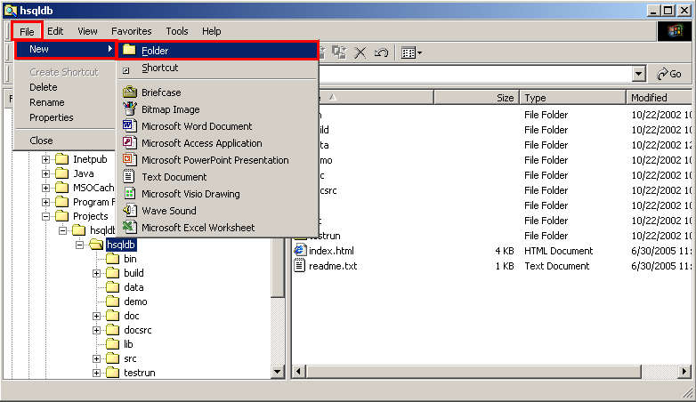
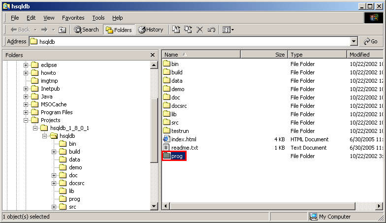
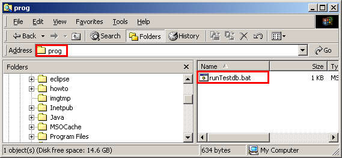
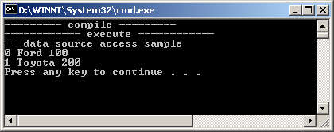

Let's try compiling and running a sample Java program included with hsqldb.
We'll create a new directory to hold a script file to compile and run the program.
Select File - New - Folder from the File Explorer menu.

Let's name the new folder prog.

Enter the following code using a text editor and save the file as runTestdb.bat. runTestdb.bat
@ECHO OFF
REM Local environmental variables
SETLOCAL
SET COMPILE_CP=.;..\lib\hsqldb.jar
SET EXECUTE_CP=.;..\lib\hsqldb.jar;test;../src
REM directory where compiled class file will be created
IF EXIST .\test (GOTO TEST_EXISTS)
MD test
:TEST_EXISTS
ECHO --------- compile ---------
javac -classpath %COMPILE_CP% -d test ..\src\org\hsqldb\sample\Testdb.java
REM if compile error abort
IF ERRORLEVEL 1 (GOTO END)
ECHO ------------ execute ------------
ECHO -- data source access sample
REM get employee name
java -classpath %EXECUTE_CP% org.hsqldb.sample.Testdb
REM -- end
:END
REM wait for key press
PAUSE
REM -- end local mode
ENDLOCAL
From the File Explorer, select the created script file.

The sample program will be compiled and executed.Press any key to close the windows. A new database file will be created in the "prog" folder.
